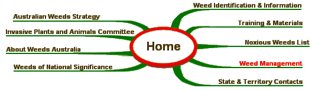

|
A weed risk assessment (WRA) is a method for determining a weed’s invasiveness, its present and potential distribution, and the impacts of the plant on social, economic and environmental values. WRA’s are used to assist land managers decide the best way to control weeds. They allow us to make decisions about which weed species need priority action. The National Weed Risk Assessment Database has been designed to facilitate access to all WRA’s held in Australia.
SITE MAP 
Australian Weeds Strategy | Weed Identification | Australian Weeds Committee |
| Site Design - Computer Support Tasmania Site Operation - John Thorp Australia |
||
| © Australian Weeds Committee |